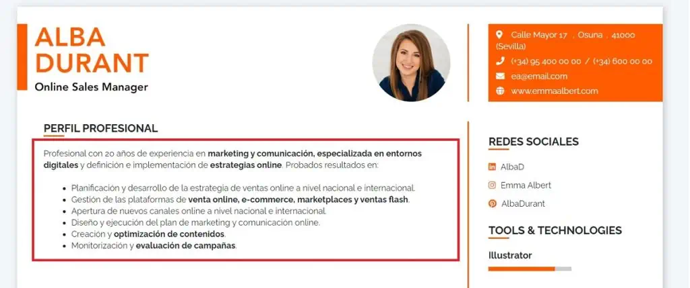

El mejor CV!
¿Cómo crear un curriculum exitoso?
Comience su currículum con un resumen u objetivo
La introducción de su currículum proporciona una instantánea rápida de su experiencia, habilidades y calificaciones en la parte superior de su currículum. Debe tener de 3 a 5 oraciones y se puede escribir en formato de oración o viñetas. Para sobresalir ante el reclutador, debe comunicar por qué es la persona adecuada para el trabajo lo más rápido posible. Ahí es donde entra en juego una introducción de currículum convincente.
¿Qué elementos incluir en el perfil profesional en el currículum?
En tu perfil profesional debes elegir (en función de tu perfil) algunos de los siguientes elementos para conseguir un mensaje adaptado:
Objetivo profesional
Un objetivo de currículum (u objetivo de carrera) se enfoca en sus metas profesionales y trayectoria profesional, y cómo coinciden con las metas de la empresa. Por esta razón, un currículum objetivo es ideal para candidatos que: acaban de graduarse de la escuela y carecen de experiencia profesional están cambiando de carrera o escribiendo un currículum para solicitar un puesto interno. Finalmente, un cuadro comparativo entre ambas categorías: perfil profesional y objetivo profesional:

¿Por qué es necesaria la sección "Perfil profesional" en el curriculum?
El perfil profesional en el currículum es importante porque facilitas a los reclutadores entender todas tus fortalezas:
Perfil profesional
Tu currículum debe captar la atención de los reclutadores desde el primer momento y un punto fundamental para conseguirlo es redactar un buen perfil profesional . En unas pocas líneas, el perfil profesional en el currículum debe dar motivos a las empresas para interesarse por el resto del contenido. Seguro que hay muchas cosas que quisieras decir sobre tu experiencia, estudios y tus aptitudes… pero los técnicos de selección necesitan que te limites a lo más importante. El perfil profesional en el currículum es un resumen breve y esquemático de tus principales fortalezas profesionales (formación, experiencias clave, habilidades) que muestra por qué eres un candidato ideal para el puesto. Tu perfil profesional debe, desde el principio, dejar claro qué ofreces: tu propuesta de valor. Esta opción es ideal para candidatos con: varios años de experiencia laboral relevante logros que se pueden vincular a números reales (que dan contexto a esos logros).
